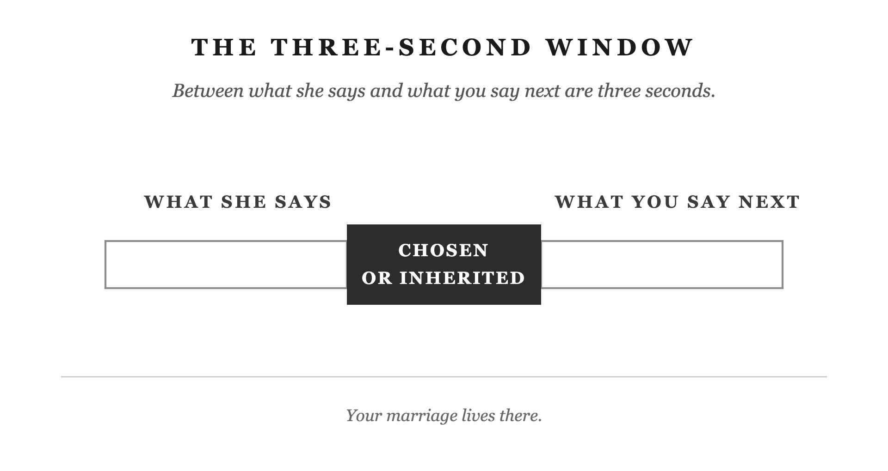

Between the moment she says something and the moment you respond, there’s a window. Most men don’t know it’s there. The ones who learn to use it become a different kind of husband.
She says something sharp. Maybe it’s about the dishes, or your tone from an hour ago, or the thing you forgot again. The content doesn’t matter. None of it does. What matters is what happens next. That half-second where you’re still somewhere between deciding and reacting. And then the two and a half seconds after, when you stop deciding and just fire.
The words are already out before you’ve finished thinking them. She’s somewhere else now. The night was fine two minutes ago. Now it’s something else entirely.
You know the rest. You’ve lived the rest.
That night you’re lying in bed. She’s there, but something is in the room that wasn’t there an hour ago. You’re not sleeping. Your mind is already replaying it. The exact moment the window opened. What you did with it. What a different choice would have looked like, and where the night would have gone.
That three-second window is what this book is about.
Not the big fights. Not the hard years or the good ones. The window. Who you are in those three seconds is the husband you’ve been becoming, mostly without knowing it.
Here’s what actually happens, in order.
Something lands. She says something, or doesn’t say something, or you catch her face doing a particular thing. On its own, that’s just data: a sound, a look, a silence.
But it never arrives on its own. It lands on something already there. A thing you’re sensitive about. A story you carry about what this kind of moment usually means. Baggage you picked up somewhere along the way. The thing plus the baggage produces a feeling, instantly, before you’ve had a single conscious thought. And that feeling already comes with meaning attached. It already says “she’s disrespecting me” or “here we go again” or “I can’t do anything right in this house.” You didn’t decide that meaning. It just showed up already finished, the way a smell arrives before you choose to notice it.
Then comes the response. For most men, most of the time, this part runs on its own too. The tone shifts. The comment fires. The silence starts, and it’s a particular kind of silence, the kind that has something behind it. None of this was decided. It happened the way it’s happened before, the way you’ve watched it happen in someone else.
Trigger. Loaded meaning. Automatic response. Run that sequence enough times, on enough different triggers, and you get something like an operating system. A set of defaults that decide, without your input, what things mean and what you do about them. Some men got a pretty mild one. Most things don’t carry much weight, and most of the responses are small. Some men got a rough one. Small things carry enormous weight, and the response matches. Almost nobody picked theirs. It’s just what got installed.
There’s a gap between the second step and the third. Between the meaning showing up and the response firing. It’s real, even on the nights it doesn’t feel real, even when it’s three seconds or less. Epictetus had a word for the loaded thing that shows up first: he called it an impression, an appearance in the older translations. And he had a word for the part of you that can sit in that gap for a moment before the response fires: prohairesis, your faculty of choice. Most of us never use it. We let the impression go straight through to the response, the same way it always has. “Appearances, wait for me a little,” he told himself, when an impression hit hard. “Let me see who you are, and what you are about; let me put you to the test.” (Discourses II.18, Long trans.) That’s the whole move. Not denying what just landed. Just not letting it drive yet.
There’s a physical version of that pause. Before you respond, take one breath. Not a sigh she can hear, not a performance. Just one breath, in and slow out, before any words come. It’s hard to fire on autopilot and breathe on purpose at the same time. Use that. Some nights it’s easier than others. When you’re under-slept, or already carrying something from earlier in the day, the gap is smaller and the breath is harder to remember. It’s still there.
Where did the meaning come from, the baggage that turns an ordinary comment into a trigger? Some of it is yours alone. A lot of it, you picked up the same place you picked up the response. Watching someone else live this exact sequence, your whole life.
I’ve been married twenty-three years. I applied Stoic philosophy to my work, my training, how I showed up under pressure in every arena. Everywhere except the one that mattered most. I’m not writing this because I figured it out early. I’m writing this because I didn’t.
My grandfather was devoted to my grandmother. Fifty-plus years, and no one who knew them doubted it. He was also the head of that household, and nobody questioned it. That was the world they both lived inside. He also had a three-second window of approximately zero.
He ran a small business for most of his life. Grandma worked for him. When something went wrong, the yelling came before the thought. Not occasionally. That was just how he operated. The people around him read it as authority. The man in charge, making clear he was in charge. When he retired he became a rancher. Same thing. Too slow or wrong, you got a tongue lashing: full volume, swearing, no filter. Grandma got it too. She’d pull in and go quiet. They went on.
My father watched this and wanted to be that man. The one who led, who didn’t back down. But he had a different wife, one who wasn’t going to go quiet, and the pattern escalated. What had been a raised voice became a screaming match. What had been sharp words became broken things. He never hit my mother. But he filled the gap with everything else available. Afterward, there was no repair. Just days of cold, and then time, and then routine, and then the next one.
I watched all of it. I was taking notes I didn’t know I was taking.
My mother’s pattern ran in two directions. When things got hard, she’d go quiet. Not for hours but for days. She’d replay the fight, hold on to the hurt, come back to it. That silence pushed my father further into his anger. His anger pushed her further into silence. A loop. But she could also engage, and when she did, the words were precise and cutting in a way that yelling never is. She knew where it would hurt most.
I don’t yell. I don’t break things. But I can sulk, and I can find that sentence. That’s the thing about the gap. It doesn’t come empty. If you haven’t decided what goes in it, something else already has.
I had all of this in me too, even with the philosophy. Then one night, lying awake long after the house had gone quiet, replaying it, it hit me. I’d never once asked myself, afterward, whether I’d shown up as the husband I actually wanted to be. I’d just moved on. Onto the next thing, the next day, the next round.
So I started asking. Not in the moment. After. Lying there in the dark, replaying what had happened: Was I being the best husband I could be?
Not who’s right. Not did she deserve that. Not is this fair. Those questions matter, and they have their place, but not here. This question does something the others don’t: it stops asking what she did and starts asking what you did. From the territory you don’t govern to the only territory you do.
Not a feeling. Four things, and when you replay the moment, ask them as if you’re still standing in it:
Wisdom is the classical word for it. Are you thinking clearly, or reacting to an impression you haven’t examined? Does this moment actually require what you’re about to do, or have you already decided and you’re just executing it?
The Stoics called this justice: are you acting from genuine care for this person and this marriage, or from ego? From the score you’ve been keeping? From a fight you were already inside before she said a word?
Temperance. Are you governing this impulse before it fires, or have you decided that what you feel is what needs to happen?
The fourth is courage. Are you here? In this room, in this moment, reachable? Or are you leaving? Through your words, or your silence, or the thing you’re about to say to end this.
Save this for afterward, not mid-fight. Walk through it then. Ask it honestly, and you already know most of the answers. You usually do.
In the moment itself, there’s room for something smaller. One breath, and one quick question: What’s this actually about for me right now, and how do I want to respond? That’s it. The breath buys the half-second. The question loosens whatever just got loaded. You don’t need the full four-part review while she’s standing in the doorway. You need it later, lying awake, training the thing that fires automatically next time.
The rest of this book unpacks those four things in every specific situation a marriage hands you. The replay question doesn’t change. Neither does the breath.
Having the question didn’t mean I used it well right away. The first time I really leaned on a piece of Stoic doctrine in my marriage, I got it backwards.
I’d learned the dichotomy of control, one of Stoicism’s foundational ideas: you control your own thoughts, choices, and responses. You don’t control anyone else’s. That part is true. What I did with it wasn’t.
When she’d get upset, I’d step back mentally. I can’t control her. I can only control me. Then I’d go calm, go quiet, and wait for it to pass. From the inside, this felt like progress. I had learned not to react. I was finally doing the thing.
My wife thought I’d gone somewhere she couldn’t reach.
She wasn’t wrong. “I can only control me” had become a way to opt out. Her frustration, what she needed from me in that moment. I’d filed it under not mine to deal with. Equanimity means staying calm and steady on the inside, no matter what’s happening around you. What I’d done wasn’t that. It was an excuse to disappear, and I’d called it progress. The Stoics called for self-command. I’d built self-removal instead.
The fourth virtue is on the list for exactly this reason. Brave enough to stay engaged. The gap is where you step toward what’s hard, and stay in the room. The Stoic Husband stays reachable. He’s learned to pause in the place most men fire from. That pause takes more presence than distance ever could.
She’s been waiting for someone to come home who isn’t just riding it out.
Marcus Aurelius was a Roman emperor. For years, he lived away from home, leading his army through wars he didn’t choose. He was governing an empire and losing people he loved. The whole time, he wrote himself notes. Not for anyone else to read, not for history. Just reminders, written in the middle of everything else. That he had power over his own mind, whatever was happening outside it. That this was where whatever strength he had left would have to come from. A man in a hard season, reminding himself of the one thing he still owned.
You own the window. Three seconds, Tuesday night, both of you tired. The night goes wherever you take it.
Use it.

Put it into practice
Mechanism: The Gap
Conversation sentence: Between what she says and your response is three seconds. What fills it, chosen or inherited, is your marriage.
Most men fire in that gap running whatever was installed by watching their fathers. They never chose it. They absorbed it. The Stoic concept of prohairesis (the faculty of choice) gives you the window back: pause, ask one question, and respond from that instead of from the default.
Lesson: Prohairesis, the faculty of choice, is what Epictetus called the part of you that can sit inside the gap before a response fires. It’s there every time, whether you use it or not.
Challenge: You already know the three seconds after she says something sharp. Most of the time you’re not choosing what happens in them. You’re just running whatever got loaded a long time before she ever said a word.